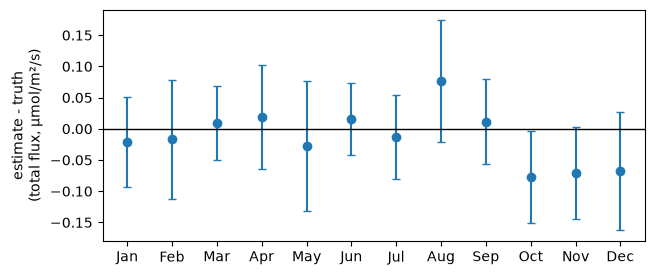
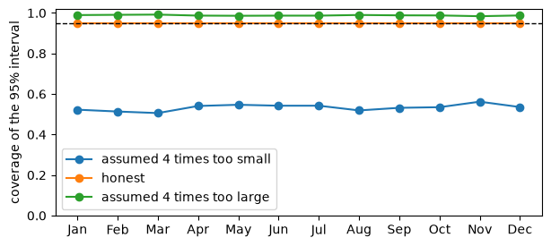
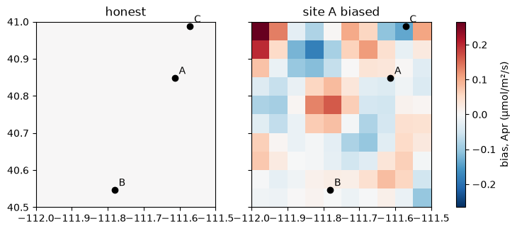
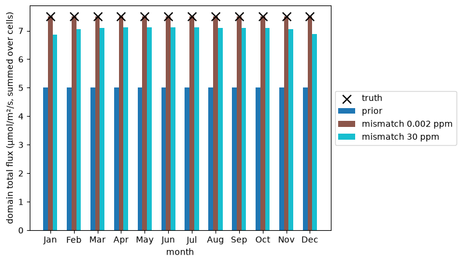

Does the inversion recover a known flux?#
An inversion returns an estimate and a claim about how uncertain it is. To check both, give it data whose answer you know. Every such test has the same shape: a world makes the data, and the inversion you run on them has its own assumptions. When the world is the problem itself, the test asks whether the inversion is honest; when one input of the world differs from what the inversion assumes, it asks how much that input matters.
Synthetic truth and observations in the user guide explains
Problem.simulate, post.with_data, the coverage loop and post.recovery.
This notebook runs four experiments on the problem of the
regional flux inversion (monthly fluxes on a grid from
daily concentrations at three sites), each on a different world:
the problem itself: is the inversion honest?
the problem with a mismatch that is larger or smaller than the inversion assumes;
the problem with a bias on the observations of one site;
a chosen truth, 1.5 times the prior, with no noise: how much of it is recovered?
Each is answered exactly, with no sampling, by post.recovery(world). The first
also runs the Monte Carlo loop, to show that the two agree and what the loop is
still for.
The problem, and a function that builds it#
The grid, the sites and the forward operator are those of the regional flux inversion, built the same way. This time there is no truth or observations to make by hand: the world makes them.
import matplotlib.pyplot as plt
import numpy as np
import pandas as pd
import scipy.sparse as sp
import fips
from fips.visualization import plot_comparison
rng = np.random.default_rng(42) # the sites and the winds, as in flux_regional
lons = np.round(np.arange(-111.975, -111.5, 0.05), 3)
lats = np.round(np.arange(40.525, 41.0, 0.05), 3)
months = pd.date_range("2024-01-01", periods=12, freq="MS")
days = pd.date_range("2024-01-01", "2024-12-31", freq="D")
sites = pd.DataFrame(
{"lon": rng.uniform(-112.0, -111.5, 3), "lat": rng.uniform(40.5, 41.0, 3)},
index=pd.Index(["site_a", "site_b", "site_c"], name="site"),
)
cells = pd.MultiIndex.from_product([months, lats, lons], names=["time", "lat", "lon"])
prior = fips.Vector.from_series(
pd.Series(0.05, index=cells, name="prior"), block="flux"
)
obs_labels = pd.MultiIndex.from_product([sites.index, days], names=["site", "obs_time"])
obs_space = fips.Space({"concentration": obs_labels})
# Each day a site sees the cells around a point upwind of it, within its month.
grid_lat, grid_lon = np.meshgrid(lats, lons, indexing="ij")
rows, cols, values = [], [], []
upwind = rng.normal(0.0, 0.1, (len(obs_labels), 2))
for i, (site, day) in enumerate(obs_labels):
x, y = sites.at[site, "lon"] + upwind[i, 0], sites.at[site, "lat"] + upwind[i, 1]
distance = np.hypot(grid_lon - x, grid_lat - y)
rows.append(np.full(distance.size, i))
cols.append((day.month - 1) * distance.size + np.arange(distance.size))
values.append(np.exp(-0.5 * (distance.ravel() / 0.15) ** 2))
jacobian = sp.csr_array(
(np.concatenate(values), (np.concatenate(rows), np.concatenate(cols))),
shape=(len(obs_labels), len(cells)),
)
forward = fips.Operator(jacobian, obs_space, prior.space)
build_problem is the builder: the function that makes a fips.Problem from
its inputs. A world with one input changed is the same call with one argument
changed: the standard deviation of the mismatch, the background (the offset),
or the standard deviation of the prior. The observations are zeros, because
simulate takes only their labels; the world makes the real ones.
noise = 0.002 # ppm, the mismatch the inversion assumes
background = 1.9 # ppm
def build_problem(obs_std=noise, offset=background, prior_std=0.25):
"""Return the regional problem, with the given mismatch, background and prior."""
prior_cov = fips.Kronecker(
fips.Exponential("time", "60D"),
fips.Exponential(["lat", "lon"], 20.0, metric="haversine"),
).with_std(prior_std)
return fips.Problem(
prior=prior,
prior_cov=prior_cov,
obs=fips.Vector(np.zeros(len(obs_labels)), obs_space, name="concentration"),
obs_cov=fips.Independent().with_std(obs_std),
forward=forward,
offset=offset,
)
problem = build_problem()
post = fips.solve(problem)
W = fips.aggregate.sum(prior.space, by="time") # the monthly totals
1. The honest world#
If the inversion’s assumptions are true, the 95% interval of each monthly total holds the truth in about 95% of the trials, and the reduced chi-squared averages 1.
The world is problem. The estimate is linear in the observations, so what
the inversion does on data from a world has an exact answer, without drawing
any: post.recovery(world, W=W) gives, for each monthly total, the bias of the
estimate, its real spread (std), the spread the posterior claims
(posterior_std), and the probability that the posterior’s 95% interval holds
the truth (coverage). recover is that call with the months named.
def recover(post, world=None, truth=None):
"""Return `post.recovery` of the monthly totals, indexed by month."""
table = post.recovery(world, truth=truth, W=W).droplevel("block")
table.index = pd.Index(months.strftime("%b"), name="month")
return table
exact = recover(post, problem)
exact[["bias", "std", "posterior_std", "coverage"]].round(3)
| bias | std | posterior_std | coverage | |
|---|---|---|---|---|
| month | ||||
| Jan | 0.0 | 0.037 | 0.037 | 0.95 |
| Feb | 0.0 | 0.049 | 0.049 | 0.95 |
| Mar | 0.0 | 0.030 | 0.030 | 0.95 |
| Apr | 0.0 | 0.042 | 0.042 | 0.95 |
| May | 0.0 | 0.053 | 0.053 | 0.95 |
| Jun | 0.0 | 0.030 | 0.030 | 0.95 |
| Jul | 0.0 | 0.034 | 0.034 | 0.95 |
| Aug | 0.0 | 0.050 | 0.050 | 0.95 |
| Sep | 0.0 | 0.035 | 0.035 | 0.95 |
| Oct | 0.0 | 0.038 | 0.038 | 0.95 |
| Nov | 0.0 | 0.037 | 0.037 | 0.95 |
| Dec | 0.0 | 0.048 | 0.048 | 0.95 |
In its own world the bias is zero, the real spread is the one the posterior claims, and the coverage is 0.95 in every month. That is the Monte Carlo result, with no sampling noise.
To check that the loop gives the same, monte_carlo is the loop of the user
guide in a function. It makes the data in world with world.simulate(rng),
solves them at the cost of a product with post.with_data(obs), and counts how
often the truth falls inside the posterior’s interval. It takes the world and
the inversion as arguments, so the next sections can change one or the other,
and one seed makes the truths and the noise the same draws every time.
def monte_carlo(world, post, trials=500, seed=0):
"""
Make data in `world` and solve them with `post`'s assumptions, `trials` times.
Return how often the 95% interval of each monthly total holds the truth and
the mean reduced chi-squared.
"""
rng = np.random.default_rng(seed)
sd = np.sqrt(post.cov(W).variances.values) # what the posterior claims
inside, chi2 = [], []
for _ in range(trials):
truth, obs = world.simulate(rng)
trial = post.with_data(obs)
miss = (W @ trial.estimate).values - (W @ truth).values
inside.append(np.abs(miss) <= 1.96 * sd)
chi2.append(trial.reduced_chi2)
return {
"coverage": pd.Series(np.mean(inside, axis=0), index=months.strftime("%b")),
"reduced_chi2": np.mean(chi2),
}
honest = monte_carlo(problem, post)
print(f"mean reduced chi-squared: {honest['reduced_chi2']:.3f}")
print(
f"coverage, mean {honest['coverage'].mean():.3f} (exact: {exact['coverage'].mean():.3f})"
)
pd.DataFrame({"exact": exact["coverage"], "500 trials": honest["coverage"]}).round(2).T
mean reduced chi-squared: 1.000
coverage, mean 0.948 (exact: 0.950)
| Jan | Feb | Mar | Apr | May | Jun | Jul | Aug | Sep | Oct | Nov | Dec | |
|---|---|---|---|---|---|---|---|---|---|---|---|---|
| exact | 0.95 | 0.95 | 0.95 | 0.95 | 0.95 | 0.95 | 0.95 | 0.95 | 0.95 | 0.95 | 0.95 | 0.95 |
| 500 trials | 0.94 | 0.96 | 0.95 | 0.97 | 0.96 | 0.94 | 0.96 | 0.95 | 0.95 | 0.93 | 0.94 | 0.95 |
With 500 trials a coverage is known to about 0.01, so each month agrees with
the exact 0.95. The loop is the way for anything recovery does not cover: a
method whose estimate is not linear in the data, a world on other labels (the
whole state where the solve was restricted), or a statistic it does not give,
such as the reduced chi-squared, which the loop averages to 1 here. One trial
looks like this: the error of each monthly total (the estimate minus the truth
the world drew) against the 95% interval the posterior claims. The truth is at
zero, and the interval should hold it in about 19 of 20 months.
truth, obs = problem.simulate(np.random.default_rng(1))
miss = (W @ post.with_data(obs).estimate).values - (W @ truth).values
half_width = 1.96 * np.sqrt(post.cov(W).variances.values)
fig, ax = plt.subplots(figsize=(7, 3))
ax.errorbar(months.strftime("%b"), miss, yerr=half_width, fmt="o", capsize=3)
ax.axhline(0, color="black", linewidth=1)
ax.set_ylabel("estimate - truth\n(total flux, µmol/m²/s)")
print(f"{(np.abs(miss) <= half_width).sum()} of 12 intervals hold the truth")
11 of 12 intervals hold the truth

2. The mismatch assumed too small, then too large#
An inversion that assumes a mismatch smaller than the real one is overconfident (its reduced chi-squared is above 1 and its intervals miss the truth too often); one that assumes a larger mismatch is underconfident (below 1, intervals that hold the truth too often).
The world’s mismatch is scaled and the inversion’s is not: post still assumes
a standard deviation of 0.002 ppm (2 ppb). Everything else is the world of
section 1. The coverage is exact, from recovery; the reduced chi-squared is
the one number that needs the loop, so the table runs monte_carlo for it.
scales = {
"assumed 4 times too small": 4.0,
"honest": 1.0,
"assumed 4 times too large": 0.25,
}
worlds = {
label: build_problem(obs_std=scale * noise) for label, scale in scales.items()
}
tables = {label: recover(post, world) for label, world in worlds.items()}
pd.DataFrame(
{
label: {
"world's mismatch sd (ppb)": 1000 * scale * noise,
"mean reduced chi-squared": monte_carlo(worlds[label], post)[
"reduced_chi2"
],
"mean coverage": tables[label]["coverage"].mean(),
"worst month": tables[label]["coverage"].min(),
}
for label, scale in scales.items()
}
).T.round(3)
| world's mismatch sd (ppb) | mean reduced chi-squared | mean coverage | worst month | |
|---|---|---|---|---|
| assumed 4 times too small | 8.0 | 12.184 | 0.533 | 0.506 |
| honest | 2.0 | 1.000 | 0.950 | 0.950 |
| assumed 4 times too large | 0.5 | 0.301 | 0.988 | 0.984 |
The reduced chi-squared gives the direction: above 1 when the data scatter more than the inversion assumed, below 1 when they scatter less. The coverage says what it costs. The 95% interval of an overconfident inversion holds the truth about half the time; an underconfident one is safe but wider than it needs to be.
fig, ax = plt.subplots(figsize=(7, 3))
for label, table in tables.items():
ax.plot(table.index, table["coverage"].values, marker="o", label=label)
ax.axhline(0.95, color="black", linestyle="--", linewidth=1)
ax.set_ylim(0, 1.02)
ax.set_ylabel("coverage of the 95% interval")
ax.legend(loc="lower left");

3. A bias on one site’s observations#
An inversion cannot tell a bias in the observations from a flux, so a bias on one site’s block lands in the estimated fluxes, and the intervals around the totals no longer hold the truth.
The world’s offset is changed on that block only: site A reads 0.01 ppm
(10 ppb) too high, five times the noise, all year. The inversion still assumes
the background of 1.9 ppm everywhere. recovery gives the bias of each total
and the coverage of its interval; the chi-squared again comes from the loop.
from_site_a = obs_labels.get_level_values("site") == "site_a"
biased_offset = fips.Vector(background + 0.01 * from_site_a, obs_space)
biased_world = build_problem(offset=biased_offset)
biased = recover(post, biased_world)
print(
f"mean reduced chi-squared: {monte_carlo(biased_world, post)['reduced_chi2']:.3f} "
f"(honest: {honest['reduced_chi2']:.3f})"
)
pd.DataFrame({"honest": exact["coverage"], "biased": biased["coverage"]}).round(2).T
mean reduced chi-squared: 3.600 (honest: 1.000)
| month | Jan | Feb | Mar | Apr | May | Jun | Jul | Aug | Sep | Oct | Nov | Dec |
|---|---|---|---|---|---|---|---|---|---|---|---|---|
| honest | 0.95 | 0.95 | 0.95 | 0.95 | 0.95 | 0.95 | 0.95 | 0.95 | 0.95 | 0.95 | 0.95 | 0.95 |
| biased | 0.82 | 0.94 | 0.49 | 0.00 | 0.16 | 0.15 | 0.94 | 0.89 | 0.95 | 0.29 | 0.92 | 0.89 |
The chi-squared rises, but it does not say which site is wrong. The map says
where the bias went: the bias of the estimate in each cell (the expected
estimate minus the truth, exact, from recovery without W), in the month
whose total it moves the most, with the sites marked. The honest world has none.
cell_bias = {
"honest": post.recovery(problem)["bias"].droplevel("block"),
"site A biased": post.recovery(biased_world)["bias"].droplevel("block"),
}
month_bias = cell_bias["site A biased"].groupby("time").sum() # the bias of each total
worst = month_bias.abs().idxmax()
limit = cell_bias["site A biased"].xs(worst, level="time").abs().max()
fig, axes = plt.subplots(ncols=2, figsize=(9, 3.4), sharey=True)
for ax, (title, bias) in zip(axes, cell_bias.items(), strict=True):
grid = bias.xs(worst, level="time").unstack("lon")
image = ax.pcolormesh(
grid.columns, grid.index, grid.values, cmap="RdBu_r", vmin=-limit, vmax=limit
)
ax.scatter(sites["lon"], sites["lat"], color="black", zorder=5)
for site, row in sites.iterrows():
ax.annotate(
site[-1].upper(),
(row["lon"], row["lat"]),
xytext=(4, 4),
textcoords="offset points",
)
ax.set_title(title)
fig.colorbar(image, ax=axes, label=f"bias, {worst:%b} (µmol/m²/s)");

The error is not under site A. In this month it is a pattern of both signs over the whole domain, the largest at the western edge, far from every site. The inversion does not remove a bias: it moves it into the fluxes.
4. Testing a prior: a truth of 1.5 times the prior#
With no noise, the share of a true departure from the prior that the inversion recovers is set by how much the inversion trusts its data against its prior.
Give the world a chosen truth instead of a draw: 1.5 times the prior,
post.recovery(truth=truth, W=W). The expected estimate is the one the
noise-free observations give, since the noise has mean zero; std is the
spread the noise adds. The recovered fraction of each total is
(estimate - prior) / (truth - prior): 1 if the inversion finds the whole 50%,
0 if it stays at the prior. This is the design of an observing system
simulation experiment (OSSE) with a known truth.
truth = fips.Vector(prior.values * 1.5, prior.space, name="truth")
def recovered(post):
"""Return the share of the true departure from the prior that each total recovers."""
table = recover(post, truth=truth)
return (table["estimate"] - table["prior"]) / (table["truth"] - table["prior"])
recovered(post).round(3).rename("as built").to_frame().T
| month | Jan | Feb | Mar | Apr | May | Jun | Jul | Aug | Sep | Oct | Nov | Dec |
|---|---|---|---|---|---|---|---|---|---|---|---|---|
| as built | 1.0 | 1.0 | 1.0 | 1.0 | 1.0 | 1.0 | 1.0 | 1.0 | 1.0 | 1.0 | 1.0 | 1.0 |
The data of this problem are precise (0.002 ppm against a signal of a few ppm), so they decide, and the whole 50% comes back. The fraction falls as the inversion trusts its data less. The same noise-free observations, solved with a mismatch standard deviation assumed larger, in ppm:
weaker = {
f"{std} ppm": recovered(fips.solve(build_problem(obs_std=std)))
for std in (1, 10, 30, 100)
}
pd.DataFrame(weaker).round(2).T
| month | Jan | Feb | Mar | Apr | May | Jun | Jul | Aug | Sep | Oct | Nov | Dec |
|---|---|---|---|---|---|---|---|---|---|---|---|---|
| 1 ppm | 0.99 | 0.99 | 0.99 | 0.99 | 0.99 | 0.99 | 0.99 | 0.99 | 0.99 | 0.99 | 0.99 | 0.99 |
| 10 ppm | 0.92 | 0.94 | 0.94 | 0.94 | 0.94 | 0.94 | 0.94 | 0.94 | 0.94 | 0.94 | 0.94 | 0.92 |
| 30 ppm | 0.75 | 0.82 | 0.83 | 0.84 | 0.85 | 0.84 | 0.84 | 0.84 | 0.84 | 0.84 | 0.82 | 0.75 |
| 100 ppm | 0.28 | 0.34 | 0.37 | 0.39 | 0.39 | 0.39 | 0.39 | 0.38 | 0.38 | 0.37 | 0.33 | 0.28 |
own = recover(post, truth=truth)
weak = recover(fips.solve(build_problem(obs_std=30)), truth=truth)
fig, ax = plot_comparison(
own["prior"].rename("prior"),
own["estimate"].rename("mismatch 0.002 ppm"),
weak["estimate"].rename("mismatch 30 ppm"),
truth=own["truth"].rename("truth"),
)
ax.legend(loc="center left", bbox_to_anchor=(1, 0.5))
ax.set_ylabel("domain total flux (µmol/m²/s, summed over cells)");
